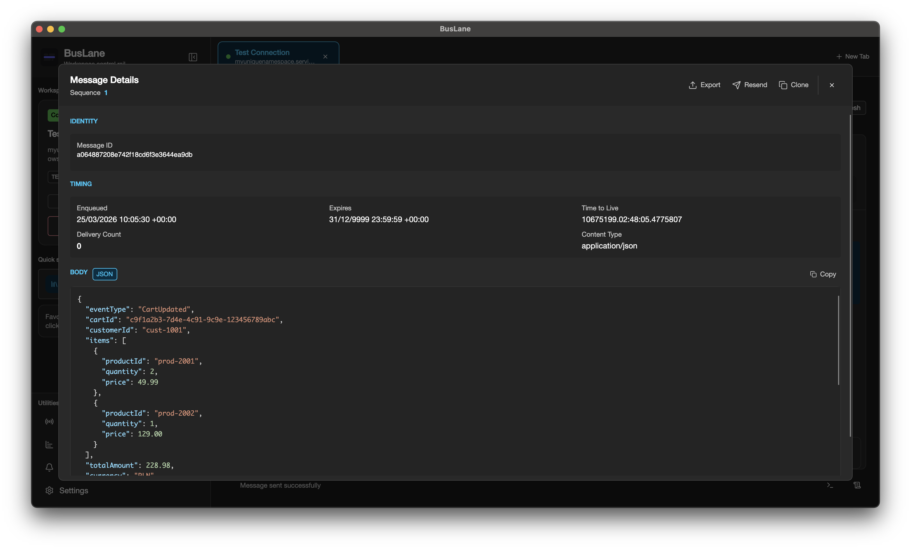

Connect
Browse namespaces with Azure Identity or saved connection strings.
Inspect messages, monitor throughput, recover dead-letter flows, and manage connections — from one fast, cross-platform desktop app for Azure Service Bus.
macOS · Windows · Linux — free & open source

One tight operational loop — connect, inspect, recover, monitor — kept a click away.
Browse namespaces with Azure Identity or saved connection strings.
Peek messages, review properties, and format JSON or XML payloads.
Search, purge, resend, and restore dead-letter flows with confidence.
Track depth, charts, alerts, live streams, and activity history.
Every capability serves a real Service Bus workflow — from secure connection storage to dead-letter recovery.
Peek, send, search, purge, resend from DLQ, and inspect message metadata — no stitching scripts together.

Azure Identity for RBAC-based access, or direct connection strings for a quicker path.
Queues, topics, subscriptions, and session-enabled entities in one tabbed workspace.
Dashboards, charts, live streaming, alert rules, and activity logs show what changed.
Read and edit JSON or XML payloads with formatting that keeps debugging tidy.
Encrypted connection storage kept on-device, with optional launch-time app lock.
One Avalonia build for macOS, Windows, and Linux — MIT-licensed and free.
Clear panels for entities, message lists, details, dashboards, and alerts — built for repetition.
Grab a packaged build from GitHub Releases, or run locally with the .NET 10 SDK.
Get the latest desktop package from GitHub Releases. On macOS, clear the quarantine flag if Gatekeeper blocks it.
Open Releases →xattr -cr "/Applications/BusLane.app"Clone the repository, restore the .NET project, and run the Avalonia desktop app locally.
git clone https://github.com/soliktomasz/BusLane.git
cd BusLane
dotnet build
dotnet run --project BusLane/BusLane.csprojEngineers and operators who need a focused desktop workflow for Azure Service Bus debugging, message inspection, and daily queue operations.
BusLane is built with Avalonia and targets macOS, Windows, and Linux from a single codebase.
Connection strings are stored locally with encryption, and the app supports an optional launch-time app lock.